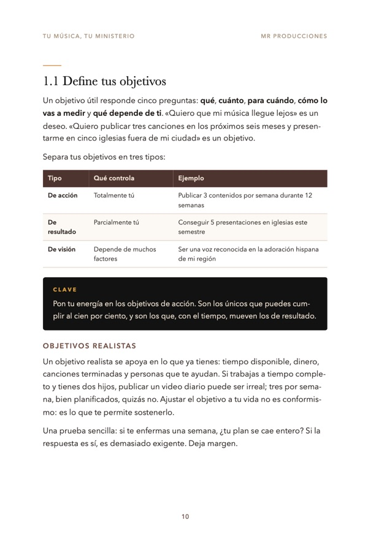
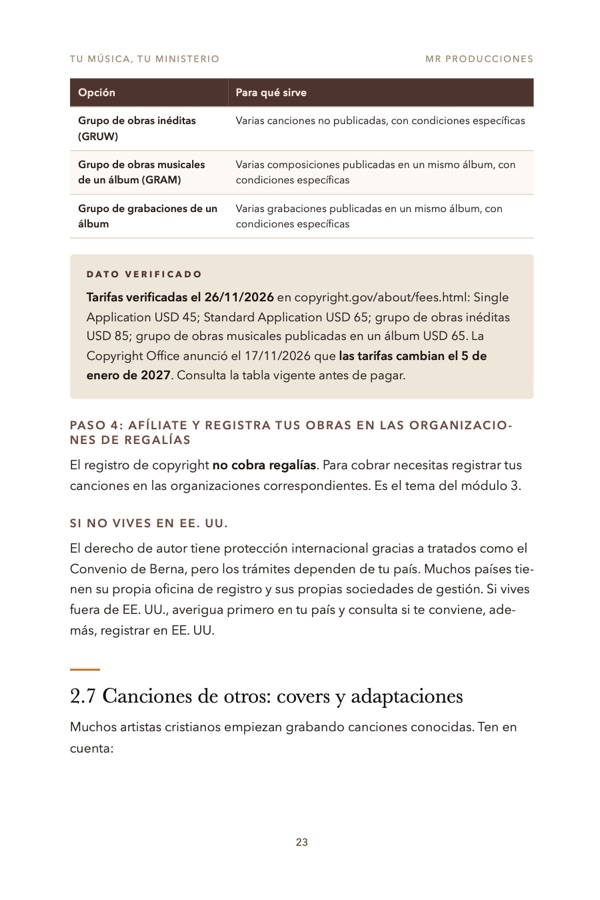
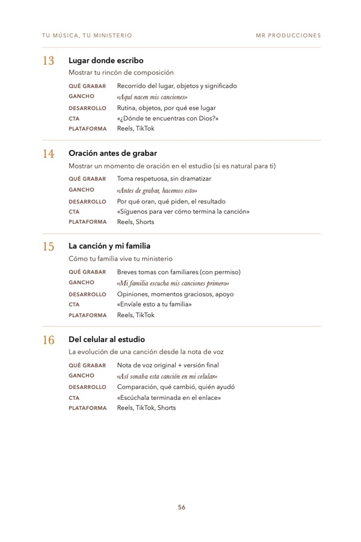
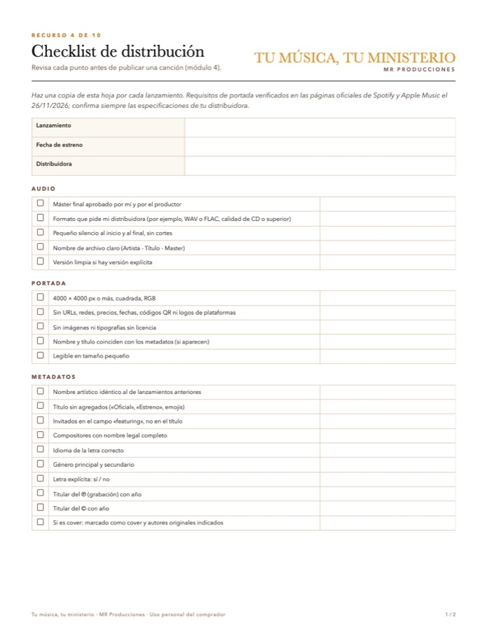
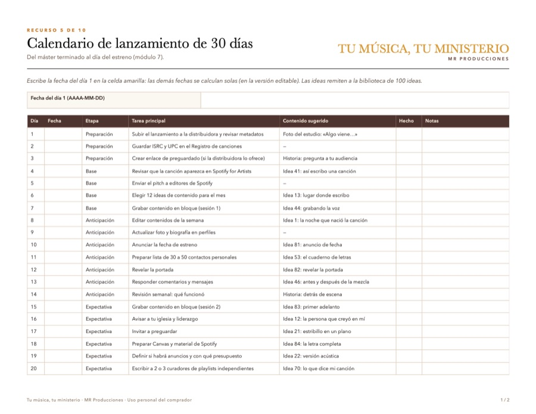

Organización del artista
Objetivos realistas, identidad, catálogo, single/EP/álbum, plan de lanzamiento y presupuesto.
config.js. Los botones de compra llevan, por ahora, a la sección de precio.Para cantantes, compositores y líderes de alabanza
Escribiste la canción. Esta guía te muestra qué hacer después.
Protege tus canciones, cobra lo que te corresponde, distribúyelas sin errores y planifica tus lanzamientos con un método paso a paso, sin depender de una discográfica.
USD 29 · pago único · acceso digital

¿Te pasa esto?
Tienes canciones, pero no sabes cómo lanzarlas. Están en notas de voz, en un cuaderno o en un disco duro, esperando el momento.
No entiendes bien los derechos de autor. Composición, grabación, regalías, editoriales… y no sabes qué te corresponde ni dónde registrarte.
No sabes cómo distribuir tu música. Distribuidoras, ISRC, metadatos, portadas: cada paso parece un riesgo.
Publicas en redes sin estrategia. Subes algo cuando puedes, pero no sabes qué grabar ni cómo hacer que te escuchen.
No consigues oportunidades. No sabes cómo presentarte ante una iglesia, un organizador o otro artista.
Trabajas con el corazón, pero sin un plan. Cada mes empiezas de cero y no sabes si estás avanzando.
Si te reconociste en dos o más, esta guía se escribió para ti.
Lo que cambia
La guía no promete fama, reproducciones ni ingresos. Te da el conocimiento y las herramientas; el trabajo lo pones tú.
El método
Los 10 módulos siguen cuatro etapas, en el orden en que las necesitas. No hace falta saber nada de la industria para empezar.
Objetivos realistas, identidad, catálogo y presupuesto. Antes de lanzar, sabes qué tienes y hacia dónde vas.
Módulo 01Derechos de autor, Split Sheet, Copyright Office y las organizaciones que cobran tus regalías en EE. UU.
Módulos 02 y 03Distribución digital, ISRC y metadatos, marca personal, contenido y un plan de lanzamiento de 30 días.
Módulos 04 a 07Oportunidades con iglesias y organizadores, fuentes de ingreso y un plan de carrera de 12 meses.
Módulos 08 a 10Así se ve por dentro
Tablas, ejemplos, datos verificados con fecha y ejercicios para pasar a la acción. Desliza para ver más.





Cómo funciona
Pago único y seguro. Hotmart te muestra el precio en tu moneda y los medios de pago de tu país.
Una vez confirmado el pago, Hotmart te envía el acceso al manual y a los 10 recursos.
Lees un módulo, completas su plantilla y pasas al siguiente. A tu ritmo, desde el celular o la computadora.
USD 29 · pago único · acceso digital
Lo que recibes
Objetivos realistas, identidad, catálogo, single/EP/álbum, plan de lanzamiento y presupuesto.
Composición vs. grabación, roles y derechos, colaboraciones, porcentajes, Split Sheet y U.S. Copyright Office.
ASCAP, BMI, The MLC, SoundExchange y la Copyright Office: qué hace cada una y por qué una no reemplaza a otra.
DistroKid, TuneCore, CD Baby, UnitedMasters, ISRC y UPC, metadatos, portadas y perfiles de artista.
Nombre, identidad visual, propuesta, biografías, fotos y redes coherentes.
Biblioteca de 100 ideas en 5 categorías y cómo producir con el celular y luz simple.
Calendario de 30 días, Reels, TikTok, Shorts, Meta Ads, Spotify for Artists, pitching y análisis.
EPK, cómo contactar iglesias y organizadores, colaboraciones y mensajes en español e inglés.
Fuentes de ingreso, presentaciones, servicios, productos digitales, presupuestos y reinversión.
Cuatro trimestres con acciones, publicaciones, lanzamientos, indicadores y evaluación.
En Excel o Word para completar, y en PDF para imprimir. Las plantillas legales incluyen un aviso: son educativas y no reemplazan el asesoramiento de un profesional.
Tres para empezar hoy
Para quién es
Que quieren lanzar su música de forma profesional.
Que necesitan proteger y registrar sus canciones.
Que quieren llevar las canciones de su iglesia más lejos.
Que sueñan con su propio proyecto.
Y quieren revisar derechos, registros y estrategia.
Y prefieren aprender el camino antes de cometer errores.
Quién está detrás
MR Producciones es un estudio de producción musical con base en Argentina que trabaja a distancia con artistas cristianos independientes, incluidos artistas hispanohablantes que viven en Estados Unidos.
Producimos, mezclamos y masterizamos canciones, y acompañamos a cada artista en la letra y en la orientación de lo que quiere comunicar. Esta guía reúne lo que todo artista independiente necesita saber antes y después de grabar: cómo cuidar su obra y cómo compartirla.
Los datos de la guía se tomaron de fuentes oficiales (Copyright Office, ASCAP, BMI, The MLC, SoundExchange y las distribuidoras) y cada uno indica la fecha en que se verificó.
Ponlo en perspectiva
La guía lo ordena todo en un solo lugar, en español, por un pago único.
Acceso a la guía
Manual + 10 recursos editables
Compra protegida
Toda compra en Hotmart incluye un período de garantía de al menos 7 días. Si dentro de ese plazo sientes que la guía no es para ti, solicitas el reembolso directamente a Hotmart, desde tu cuenta o desde su Central de Ayuda.
Preguntas frecuentes
Hotmart confirma el pago y te envía el acceso al material digital: el manual en PDF y los 10 recursos. Si algo no te llega, puedes escribirnos por los medios de contacto del pie de página.
No. La guía explica con detalle el sistema de EE. UU. (Copyright Office, ASCAP, BMI, The MLC y SoundExchange) porque es donde vive gran parte del público, pero la distribución, la marca, el contenido, los lanzamientos, las oportunidades y la planificación sirven en cualquier país. Si vives fuera de EE. UU., la guía te indica qué averiguar en tu país.
Sí. Hotmart te muestra el precio en tu moneda local y los medios de pago disponibles en tu país, como tarjeta o PayPal.
Sí. Está escrita en lenguaje claro, con ejemplos y ejercicios. No necesitas experiencia previa en la industria.
Sí. Te ayuda a revisar si tus canciones están bien registradas, si tus metadatos son consistentes, a ordenar tu catálogo y a planificar tus próximos lanzamientos.
Sí. Cada módulo se puede leer por separado y termina con una tarea concreta. Puedes avanzar un módulo por semana y empezar por el que más necesites.
Sí. El manual está en PDF y se puede leer en celulares, tabletas y computadoras compatibles. Para completar las plantillas editables es más cómodo usar una computadora, aunque también puedes usar las versiones PDF para imprimir.
No. Los conceptos se explican desde cero. La guía es educativa y no reemplaza el asesoramiento de un abogado o contador para tu caso particular.
No. Nadie puede garantizar reproducciones, seguidores, ingresos ni ingreso a playlists. La guía te da conocimiento, herramientas y un plan de trabajo; los resultados dependen de muchos factores, como la calidad de tus canciones, tu constancia y tu público.
USD 29 · pago único · manual + 10 recursos · compra protegida por Hotmart
Espera un momento
Es un pago único de USD 29, sin suscripción, y la compra está protegida por la garantía de Hotmart.
Revisa las preguntas frecuentes o escríbenos y te respondemos antes de que compres.